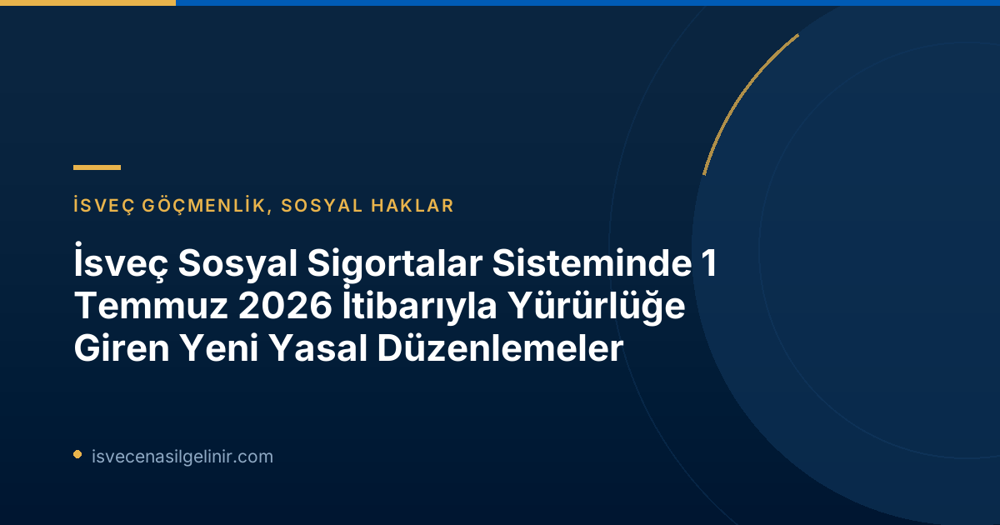

1 Temmuz 2026 Tarihi İtibarıyla Yürürlüğe Giren Başlıca Yasal Değişiklikler
İsveç Parlamentosu (Riksdagen), sosyal sigorta sistemini ilgilendiren üç önemli yasa değişikliğini onayladı. 1 Temmuz 2026 tarihinde yürürlüğe giren bu düzenlemelerin temel amacı, hatalı ödemeleri ve sosyal güvenlik sistemindeki suiistimalleri en aza indirmek, ayrıca vatandaşların belirli hizmetlere erişimini kolaylaştırmaktır. Bu bölümde, söz konusu değişikliklerin her birini ayrıntılı olarak inceleyeceğiz.
Hatalı Ödemelerde Yaptırım Ücreti (Sanktionsavgift)
Sosyal güvenlik sisteminin güvenilirliğini artırmak ve hatalı ödemeleri caydırmak amacıyla, Försäkringskassan ve Pensionsmyndigheten, yanlış bilgi veren veya değişen durumları bildirmeyerek hatalı ödemelere yol açan kişilere karşı yaptırım ücreti uygulama yetkisine sahip oldu.
Yaptırım Ücreti Detayları
- Uygulayan Kurumlar: Försäkringskassan ve Pensionsmyndigheten
- Yürürlük Tarihi: 1 Temmuz 2026
- Uygulama Kapsamı: Yanlış bilgi verme, değişen durumları bildirmeme sonucu oluşan hatalı ödemeler.
- Ceza Oranı: Hatalı ödenen ve geri ödenmesi gereken tutarın %25'i.
- Asgari Ceza Tutarı: 2.368 SEK (Fiyat baz tutarının %4'ü). Bu tutar, her durumda uygulanacak minimum cezadır.
Bu düzenleme ile, sosyal yardımlardan faydalanan herkesin doğru ve güncel bilgi verme sorumluluğu daha da belirginleşmiştir. Herhangi bir değişiklik (iş değişikliği, medeni hal değişikliği, gelir değişikliği vb.) derhal ilgili kuruma bildirilmelidir. Aksi takdirde, hatalı ödeme ile karşılaşılması durumunda, ödemenin iadesine ek olarak %25 oranında bir yaptırım ücretiyle karşı karşıya kalabilirsiniz.
Maksimum 3 Yıla Kadar Fayda Bloke (Bidragsspärr)
Sosyal sigorta sisteminin kasıtlı veya ağır ihmalle suistimal edilmesini önlemek amacıyla, yeni bir yaptırım olan "fayda bloke" uygulaması yürürlüğe girmiştir. Bu, hatalı ödemelere kasıtlı olarak veya ağır ihmal sonucu neden olan kişilerin belirli sosyal yardımlardan geçici bir süreyle men edilmesi anlamına gelmektedir.
| Kapsam | Uygulama Süresi | Amaç |
|---|---|---|
| Kasıtlı veya ağır ihmalle hatalı ödemelere neden olan kişiler. | Birkaç aydan üç yıla kadar (suistimalin ciddiyetine göre değişir). | Sosyal sigorta sisteminin sistematik suistimaline karşı daha güçlü bir koruma sağlamak. |
Bu yaptırım, özellikle sistemli suistimal vakalarını hedeflemekte ve sosyal güvenlik ağının sürdürülebilirliğini sağlamayı amaçlamaktadır. İsveç'teki hak ve sorumluluklarınızı öğrenmek, geleceğe güvenle bakmak için sverigemedborgarskapsprov.com adresindeki kaynaklardan faydalanabilirsiniz.
Ebeveyn Parası (Föräldrapenning) Başvurularında Kolaylık: Ön Bildirim Şartı Kaldırıldı
Ebeveynlerin hayatını kolaylaştırmak adına Försäkringskassan, ebeveyn parası (föräldrapenning) başvuruları için önemli bir basitleştirmeye gitti. 1 Temmuz 2026 tarihinden itibaren, ebeveyn izni kullanmak isteyen kişilerin önceden bir bildirimde bulunma zorunluluğu kaldırıldı.
Ebeveyn Parası Başvurularındaki Yenilikler
- Yürürlük Tarihi: 1 Temmuz 2026
- Eski Durum: Ebeveyn izni almadan önce Försäkringskassan'a ayrı bir bildirimde bulunmak gerekiyordu.
- Yeni Durum: Artık doğrudan ebeveyn parası başvurusunda bulunmak yeterli olacaktır. Ön bildirim şartı kaldırılmıştır.
- Kurum: Försäkringskassan
Bu değişiklik, yeni ebeveynler için bürokratik yükü azaltmayı ve süreci daha hızlı ve erişilebilir hale getirmeyi hedeflemektedir. Artık sadece ebeveyn parası başvurusu yaparak, çocuklarıyla ilgilenmek için gerekli izni alabilecekler.
Bu Değişiklikler Sizi Nasıl Etkiliyor?
Bu yasal değişiklikler, İsveç'te yaşayan herkesi, özellikle de sosyal güvenlik sisteminden faydalanan kişileri yakından ilgilendirmektedir. Hatalı ödemeler ve suistimallerle mücadele amaçlı yaptırımlar, vatandaşların resmi kurumlara karşı dürüstlük ve şeffaflık ilkelerine uymasının altını çizmektedir. Ebeveyn parası başvurusundaki kolaylık ise, özellikle yeni ebeveynlerin süreçlerini önemli ölçüde hızlandırarak onlara zaman kazandıracaktır.
Sonuç ve Önemli Tavsiyeler
Försäkringskassan tarafından duyurulan bu yasal değişiklikler, İsveç'in sosyal refah sisteminin sürdürülebilirliğini ve adil kullanımını sağlamaya yönelik önemli adımlardır. Yanlış uygulamaların önüne geçilmesi hedeflenirken, aynı zamanda bürokratik engellerin azaltılmasıyla vatandaş odaklı bir yaklaşım da sergilenmektedir. İsveç'te yaşayanlar olarak, sosyal hak ve yükümlülüklerimizi dikkatle takip etmek, değişen koşullarımızı derhal ilgili kurumlara bildirmek ve her zaman doğru bilgi sağlamak büyük önem taşımaktadır.
Referanslar:
- Försäkringskassan: Lagändringar 1 juli som berör socialförsäkringen
- İsveç Vatandaşlık Sınavı
İsveç Sosyal Sigortalar Hakkında Daha Fazla Bilgi Edinin!
İsveç sosyal haklarınız, vatandaşlık testleri ve göçmenlik süreçleri hakkında aklınıza takılan tüm sorular için uzman danışmanlarımızla iletişime geçin.